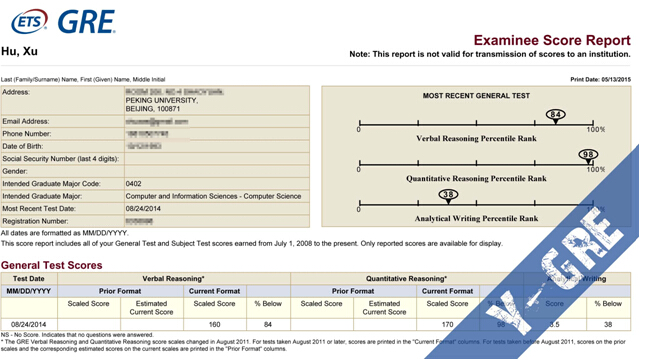
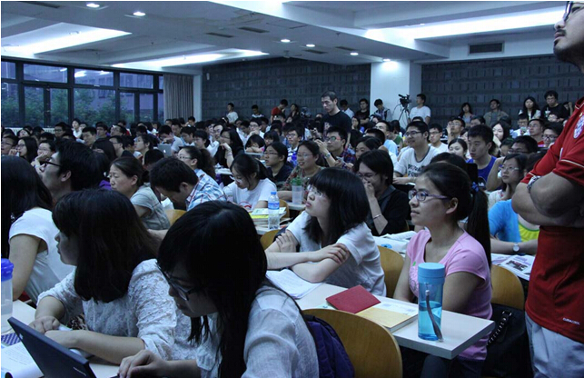
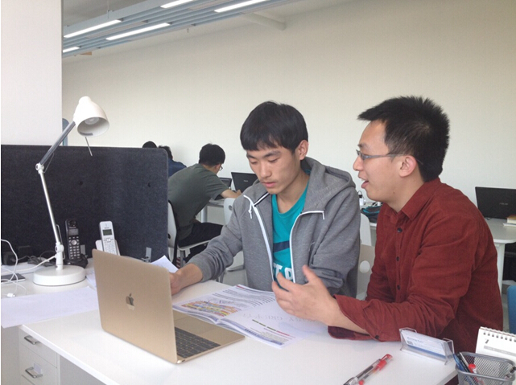

云英语
云英语：因学术而改变

考试时间：2014.08.24（北工商考场）
考试分数：V160 Q170 AW3.5
备考时间：VB100h + Y-GRE130h
按理说这篇文章是应该在学期初考完时发的，但是这个比大一还忙的学期似乎占用了我的全部精力……不过也好，可以增补一些内容。
首先是英语基础吧：我的英语虽然谈不上糟糕，但充其量也只是不太拖后腿的水平。从中学到大学都没有认真听过课，平时也从未看过美剧之类的东西。如果要说积累，只能是看过的几本外文书了。这些书都是专业内容，句式和词汇都极其简单，不过倒是了解了一些术语。进入大学之后在课余时间断断续续背了四六级单词，然后考了四六级。至于托福和GRE则只闻其名。
等到忙碌的大三下学期结束就进入七月了。按照自己当时的水平，我估计靠自己准备来通过GRE不太现实，而且花费的时间无法预计。那时恰好有云英语的讲座，听完以后抱着病急乱投医的态度就准备去了。不过事实证明我投到了一位名医：）
从七月初开始的大概一个月里，我每天投入7到11个小时学习VB的课程。（当然实际上，中午吃个饭再睡一会，睡醒发现眼睛压花了就再散散步，2个小时就没了）对我来说，VB的价值在于从分析的角度理解词汇。在没有任何背景知识的情况下，面对一个词语我们看到的只是字母组合，要强行建立字母组合与意义之间的关联显然非常困难；而且，这种机械背诵的问题在应用到真实语境中时常常会遇到困难。为了提高效率，将词语分解成词根的做法应运而生。但是英文作为一种表音文字，词语的写法会随语音流变而变化，这使得能够作为词根的字母组合数量相当有限，同时这种方法依然要依赖汉译来理解词语。VB建立了一条从原始印欧语到英语及其他语言的路径，其中包括词语意义的漂移扩展和发音的演变。这使得我们可以有效地识别出一个词语的构件（在不同的词语里可能写法完全不同），并根据这些构件的含义理解词语的真正意义，而非背诵字典。
实践中这种方法效率的确要高很多。由于时间上的压力，我有时需要牺牲学习效果来保证进度，但效果依然明显。考完六级后我试过背GRE单词，三四天后就发现毫无效果而放弃；但是经过这里的学习，我发现遗忘虽然仍然存在，但已大为改善。如果复习充分，我想是可以完全掌握VB中的大量单词的。另外，配合VB每一课的习题和阅读材料也很有针对性。阅读材料融入了对应课程中的大量词汇，而且讲述了PIE相关的一些背景知识，质量很高。
剩下的半个月时间就进入了Y-GRE平台。Y-GRE的每个单元都是由某一学科相关的大量题目、词汇预备和学科背景讲解和细致的讨论解析组成。进入这一阶段后发现，虽然之前的VB学习已经极大地提高了我的词汇量；但是在GRE的题目面前，短短一个月的积累还是千疮百孔。而其中GRE声称要考察的逻辑推理内容，对我来说则比较简单。阅读以外的题目其逻辑大多很直接，难点基本都在单词上和断句的问题上（这也受单词影响）。因此在做这部分题目时我主要记录了生单词，通过对题目整句的印象来帮助回忆词义。有时题目中会出现一些由常见词构成的陌生短语；这些短语很少，但会直接影响句义，因此应该记住。
我的词汇量始终是非常明显的短板。因此从平时的练习、测验到真实的考试，阅读以外的题很多靠猜。从我接触到的题目看，一般题干的句子比较容易读懂，而选项单词就不认识几个了。所以为了提高猜的正确率，平时就要多积累。记住精确的意思比较耗时，而且会忘；所以这时VB中积累的知识就显得非常重要。如果要记忆，可以先记住其意思的正负向，如同意-反对、激进-保守之类。很多题目只靠这个信息就可以确定答案的正负向，进而排除一些错误选项。另外查阅词典时同义词条目很重要，主要是要了解这些词都有这个意思，至于它们的区别嘛，如果是突击备考，就算了吧。除此以外如果能直接看出其词源构成，那么词义也就能大概看出一些。
就我而言，阅读对词汇的要求相对低一些，主要是因为有语境可以推测；难词的类型也多为术语。我练习的主要是老G的阅读，包括4题的短文和7题的长文。这些题目的难度相对新G低一些，逻辑较为简单。事实上对这种文章和题目，只要给予充分的时间，即使其中充满晦涩的术语也可以正确做出题目。但是实际的考试是限时的，所以文章最好能一遍看完，不再回顾，这一点比较重要。在能够确保一遍读完后，还可能因为理解错误、理解不清、记忆错误等导致答题错误。为了减少这些错误，最好能对相关内容有预先了解，包括术语和文章内容，以便快速而准确地理解文义。这也是Y-GRE按学科组织题目的原因之一。在做完阅读后，除了检查错误原因（一般比较明显），就是记录一些术语并回忆文章所讲的内容了。了解术语的另一个好处是托福阅读中也经常出现这些词，可以大大降低阅读难度。
至于预测式图景阅读的详细细节，可以看看专门的帖子有认真的分析。（http://legacy.y-english.org/feedback/posts/009.html）
在做练习的过程中，我曾怀疑做比真实考试的难度略低的题效果究竟如何。不过最后在做powerprep的两套模拟题时我发现，虽然题目的确变难了，但文章也显著变短。如果长文都能够快速一遍看完并有效理解，短文就可以很快搞定，从而节省大量时间用于重读或思考。这一点在真实考试中也得到了验证。
Y-GRE提供了9个单元分门别类的内容来训练，不过限于时间，我只做到了第3单元。而且最后一周由于有其他事务，复习的节奏非常慢。但即使是这么仓促的准备，带来的提升也是非常明显的。

关于Q和AW的准备，因为时间不足，数学只做了两套模拟题里的，作文则是在考前一晚临时写了两篇。如果和我一样面临时间不足问题的话，数学就只需看看术语（这个我都没看），确认一下义务教育内容没忘掉就行。另外可以试一下考试界面计算器的操作。作文基本属于裸考，不好说经验；唯一能说的就是，举例子可以充字数，没话的话可以试试。
最后说说考试情况。考试时时间安排要根据自己的长短板来确定。比如我在遇到不会的词汇题时就找一些线索猜一个，不在上面耽误时间。（当然，这个不是标准流程，一定要因人而异！）考试时verbal的两个section我都按照子聪的建议，先跳过三空题，最后回头再做；阅读之外的题目做+猜，大概几十秒一个；这样阅读就有足够的时间。第一个section的阅读较难，印象里有文学批评的文章，做得略慢，不过也足够回头做完三空题了；第二个section进入hard模式，做完阅读回到三空题时大约还有六七分钟，依然足够完卷。最后在成绩报告中，我的两个section阅读错误都很少，虽然第二个section的SE错误很多，但没有拉太多后腿。数学里遇到一些生词，不过可以推测词义。另外，有的数学题目会给多余信息。作文我先写好了每段的观点，然后看时间往里面填内容，包括阐释和举例。这样的话即使时间不够文章也不会显得破碎。
总之，这么短的时间内从零基础开始，要系统地提高英语能力并不容易，但通过考试也不是不可能。感谢云英语，感谢子聪随时的指导！还要感谢一下ETS，没有太为难我。。。

版权所有 2011-2015 云英语 Y-English All Rights Reserved
地址：北京市海淀区五道口华清嘉园商务会馆802
电话：400-876-3898 010-82863898 82863899 传真：010-82863897